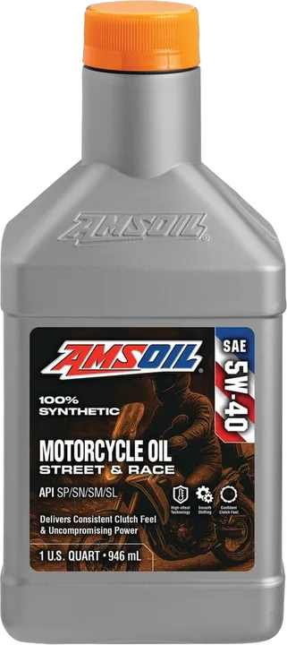

Código MMF • SAE 5W-40
AMSOIL 5W-40 100% Synthetic Metric Motorcycle Oil
Diseñado para motocicletas métricas de altas RPM (Honda, Yamaha, Kawasaki, Suzuki, BMW, Triumph, Ducati, KTM) que exigen máxima protección contra el desgaste de caja y motor.